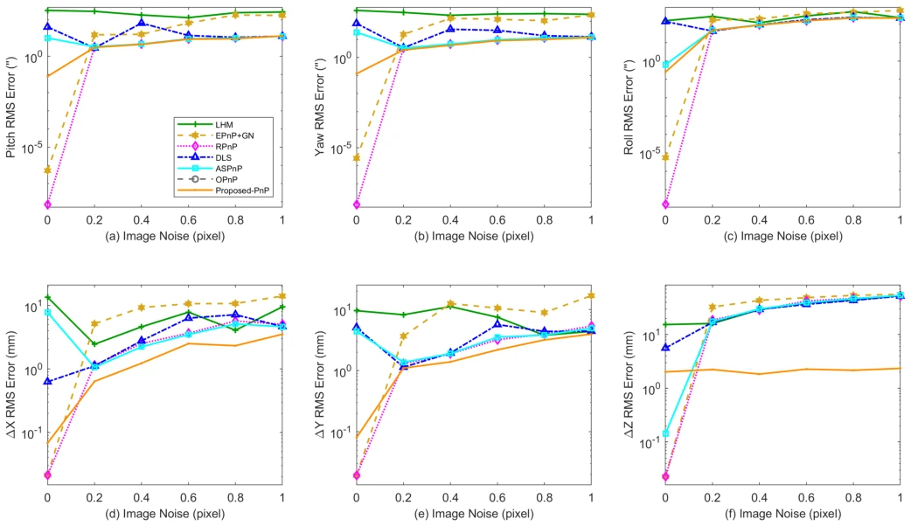
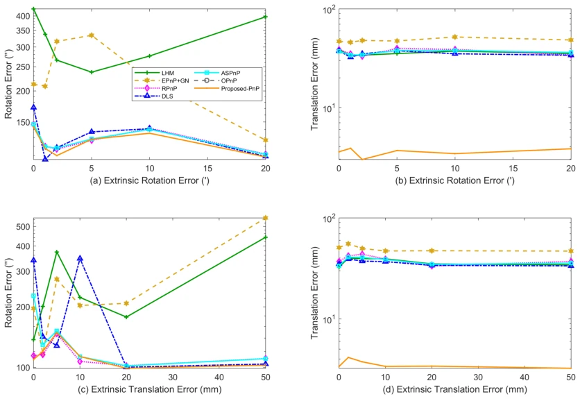
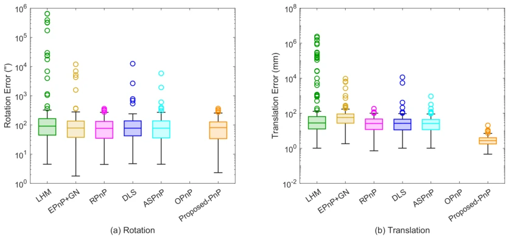
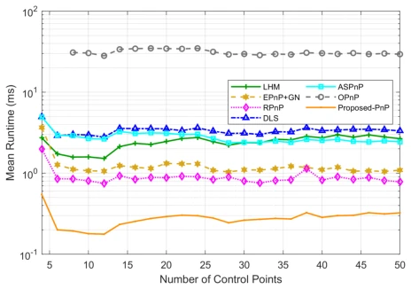
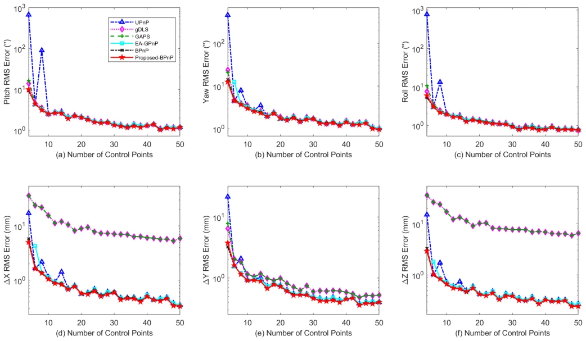
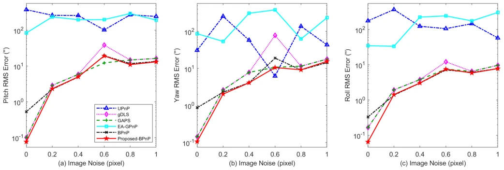
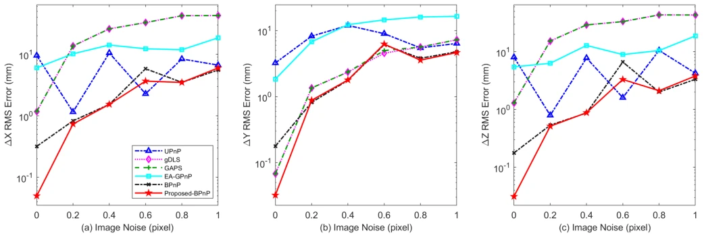
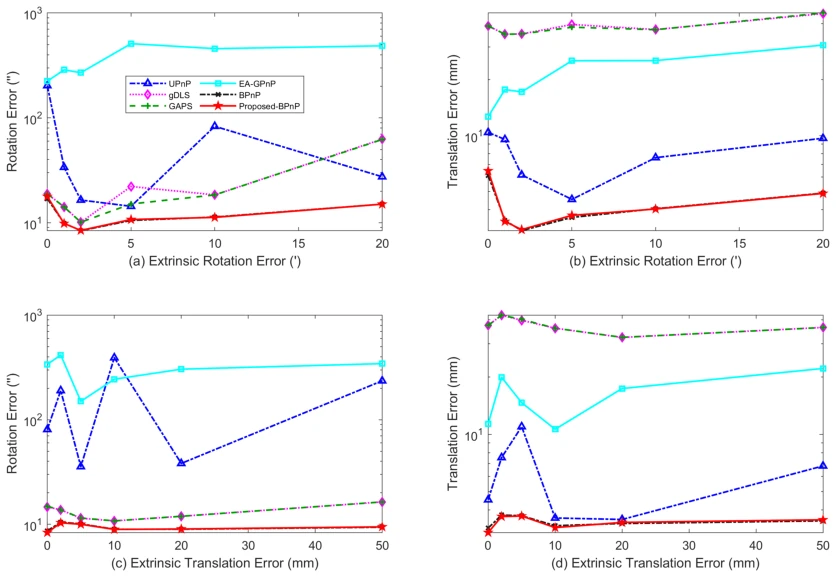

Fig. 1. Schematic diagram of the PnP-like method and the proposed method for the relative pose estimation: (a) scene and coordinate frames; (b) the conventional pipeline solves two absolute poses and differences them; (c) the proposed pipeline takes the image-point differences as the direct observation and solves the relative pose in a single linear step, with no absolute pose solved at any stage.
Fig. 3. RMSE of the rotation and translation components w.r.t. the number of control points: (a)–(c) rotation; (d)–(f) translation.

Fig. 4. RMSE of the rotation and translation components w.r.t. the image localization noise: (a)–(c) rotation; (d)–(f) translation.

Fig. 5. Influence of the extrinsic calibration errors on the monocular methods: (a)(b) extrinsic rotation error; (c)(d) extrinsic translation error.

Fig. 6. Box plots of the rotation and translation errors under the typical condition: (a) rotation; (b) translation.

Fig. 7. Average runtime of the monocular methods versus the number of control points (6-DOF estimation).

Fig. 8. RMSE of the rotation and translation components w.r.t. the number of control points: (a)–(c) attitude angles; (d)–(f) translation components.

Fig. 9. RMSE of the three attitude angles w.r.t. the image localization noise: (a) pitch; (b) yaw; (c) roll.

Fig. 10. RMSE of the three translation components w.r.t. the image localization noise: (a) X; (b) Y ; (c) Z.

Fig. 11. Influence of the extrinsic calibration errors on the multi-camera methods: (a)(b) extrinsic rotation error; (c)(d) extrinsic translation error.